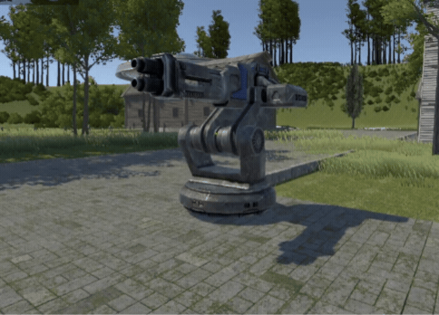
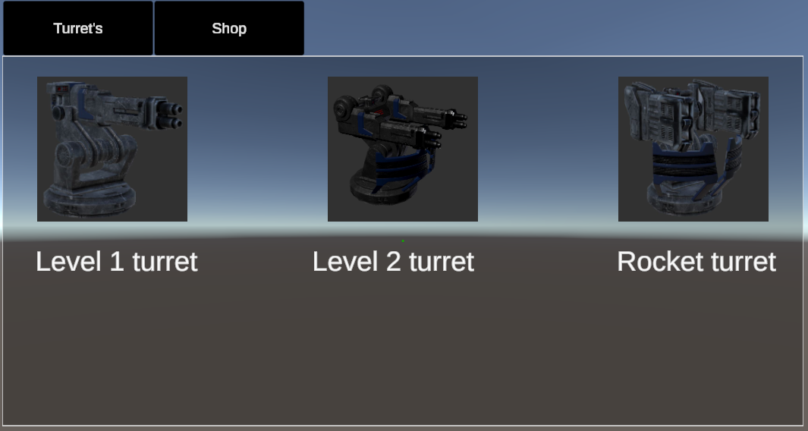

Engine| Unity Platform| PC Project length| Jan 2024 - June 2024 Team Size| 3 My Roles| Programmer, Turret and Menu designer
In Bastion Towers, the player travels throughout different time periods setting up defenses to help protect various civilizations from alien attacks. The player is equipped with an array of weapons, and can pick up coins to purchase items in the shop and bolts to buy and upgrade turrets. Because the player is trying to defend against multiple alien attacks throughout time, they must use turrets to set up defenses to protect these civilizations in their absence.
Responsibilities
- Created initial pitch for the game and presented it to teammates.
- Tested and debugged code written by my teammates and I.
- Created code for turret system while combining assets from the Unity store to create defensive towers for the player to build.
- Designed Start, Pause, and shop menus for player to use and created functions for each button.
Turret System
The turret system was an aspect I decided to take on myself. We needed a goal for the player to work towards to advance to the next level. To do this, each level has a set defensive score the player must reach. Each turret increases the player's defensive score. Once the player has reached the defensive score, the civilization is properly defended and the player can move on to the next time period. We decided that bolts would be the best thing for the player to collect as currency for building and creating turrets. I was put in charge of creating the drop that my teammate had the enemies drop and added the spinning affect to the item to make it more visible.

I started with the basic level 1 turret. I added a sphere collider which is checking for a Game Object that is tagged with the Enemy tag attached to it. When the enemy walks into the sphere, it is added to a list of enemies. Now, if the enemy dies or if the enemy leaves the sphere, the enemy is removed from the list and the turret moves to the next available enemy in the list. The turret has an empty object set as a firing location and instantiates a bullet at that location, which then applies a force to the bullet in the direction of the enemy.

Menus
I also created part of the menu UI in Bastion Towers. I wanted a simplistic way to display our menus so that it was easy to navigate for the players. I worked on the main menu shown above for purchasing turrets and swapping between the Turret and Shop menus. We thought having the menus combined in a tab-like system would help the player quickly swap between the menus while in the middle of the round. The turret menu allows the player to quickly buy new turrets to place on the map, while the shop menu is there for health packs, barbed wire, and ammo. We made the menu transparent so that the player was able to still see their surroundings while in the menus.